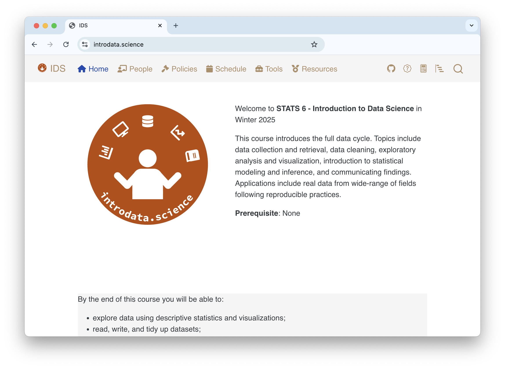
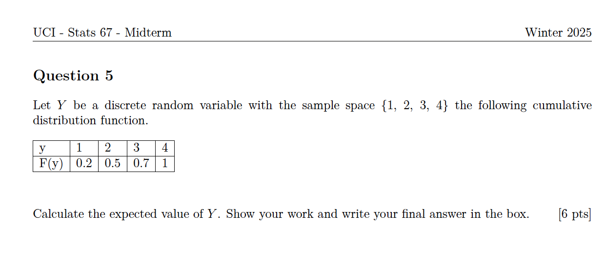
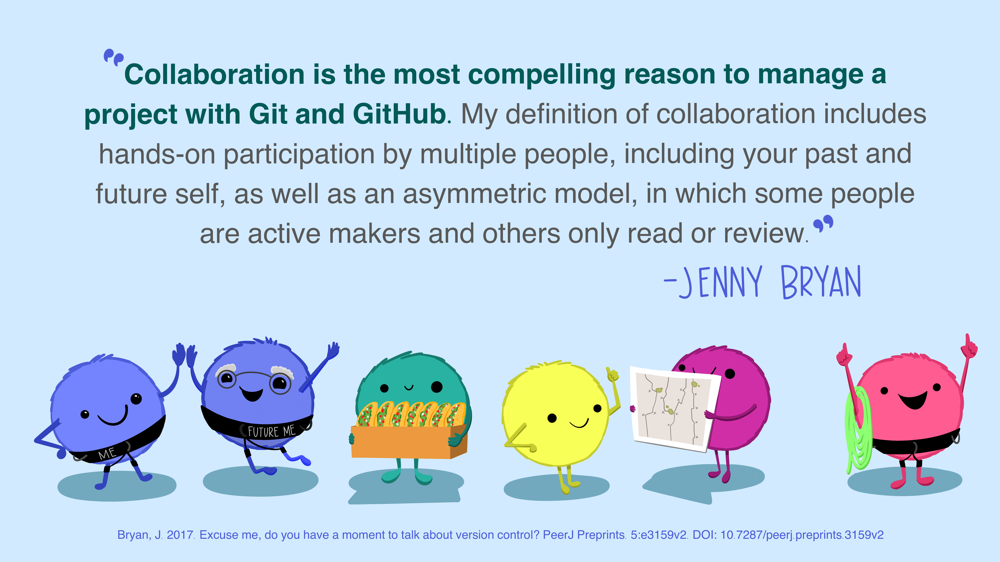

[1] 31 79 51[1] 31 79 51[1] 31 79 51[1] 31 79 51[1] 31 79 51Talk at TALMO
2025-03-12
| Purpose | Tool |
|---|---|
| Research | R |
| Teaching | PowerPoint |
| Learning | Graphing Calculator |
| Purpose | Tool |
|---|---|
| Research | R |
| Teaching | R |
| Learning | R |
| Purpose | Tool |
|---|---|
| Research | R |
| Teaching | PowerPoint |
| Learning | Graphing Calculator |
| Purpose | Tool |
|---|---|
| Research | R |
| Teaching | R |
| Learning | R |
All teaching materials should be
computationally reproducible,
well-documented, and
open.
![Two fuzzy round monsters dressed as wizards, working together to brew different things together from a pantry (code, text, figures, etc.) in a cauldron labeled “R Markdownâ€. The monster wizard at the cauldron is reading a recipe that includes steps “1. Add text. 2. Add code. 3. Knit. 4. (magic) 5. Celebrate perceived wizardry.†The R Markdown potion then travels through a tube, and is converted to markdown by a monster on a broom with a magic wand, and eventually converted to an output by pandoc. Stylized text (in a font similar to Harry Potter) reads 'R Markdown. Text. Code. Output. Get it together, people.'](img/rmarkdown.png)


Keep data in the raw form you find or collect it, and record any steps to process it to prepare it for teaching.
[1] 31 79 51[1] 31 79 51[1] 31 79 51[1] 31 79 51[1] 31 79 51week-11-simple-linreg
|-- week-11-simple-linreg.Rproj
|-- README.md
|-- data
|-- README.md
|-- bike-rental.csv
|-- birth-weight.csv
|-- lectures
|-- lec-11a-simple-linreg.qmd
|-- lec-11b-indicator-var.qmd
|-- lec-11c-assumptions.qmd
|-- quizzes
|-- quiz-11a-simple-linreg.qmd
|-- quiz-11b-indicator-var.qmd
|-- quiz-11c-assumptions.qmdAdopt a project-based workflow to avoid changing file paths.
The file names should
be machine-readable
be human-readable
play well with default-ordering
Use here::here() to set the file path to the root of the project.

Document contents and provenance of data files:
Option 1:
A single README.md file with variable descriptions and provenance.
Option 2:
name and description.README.md file with data provenance.Use plain-text formats, not spreadsheets like Excel or Google Sheets, for version control compatibility.
Include a plain-text README file in the course folder and each top-level subfolder explaining the folder’s contents and outlining steps to reproduce materials, e.g., quarto render.
Minimum:
Document versions of R, Quarto, packages, etc. README files, manually updated or programmatically generated with session_info().
Medium:
Use renv (R) or venv (Python) to preserve the computational environment.
Advanced:
Use Docker containers for full environment snapshots.
Use the reprex package to generate reproducible code snippets and share session details when answering student questions.
Option 1:
or Option 2:
or Option 3: Who cares? It doesn’t matter!
Pick a style, any (reasonable) style, but, at a minimum, avoid spaces and use line breaks to improve human and machine readability.
Ideally, conform to a established, professional style guide for better student preparedness:
Openly share materials on publicly hosted websites to increase accessibility and reusability.
Challenge: University policies on hosting course materials in password-protected LMS – consistency for students across courses but limits broader access.
Consider posting materials both on university platforms (for students) and publicly (for wider access). Open access benefits learners worldwide, while open-source sharing allows other educators to adapt and reuse materials.
Always release materials with a license, whether open-access or open-source.
Non-software:
Consider whether to allow derivative works and re-sharing (e.g., share-alike options):
Software:
Educators should familiarize themselves with licensing options before making a choice. Recommended reading: The four R’s of openness and ALMS analysis: frameworks for open educational resources by Hilton III et al. (2010) on licensing and open educational resources.
Rarely, if ever, an investment in reproducibility doesn’t pay off!
Adopting the complete framework likely requires learning new tools and keeping your (and your co-instructors’ + TAs’) knowledge of tools and ecosystems up to date, which is no small feat!
Openness brings free learning materials to your discipline and community as well as generates opportunities for collaboration and recognition and can serve as a role model for your students.
🔗 Slides at mdogucu.github.io/talmo-25.